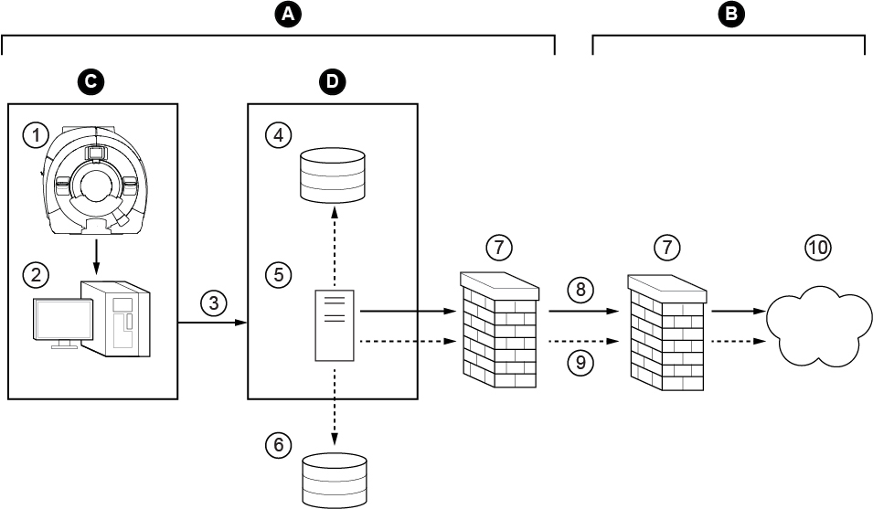

- 00000018WIA30E6C030GYZ
- id_123741031.14
- Oct 11, 2021 7:47:41 PM
Arterys PHI Service Installation
Prerequisites
| Required persons | Preliminary requirements | Procedure | Finalization |
|---|---|---|---|
| 1 | - | 120 minutes | - |
About this task
Overview
ViosWorks is powered by the Arterys cloud platform, which is FDA cleared and CE marked. Arterys is a web-accessible, image analysis software intended to automate and simplify the visualization and quantification of cardiovascular images. Cine3d and flow4d are the options on MR console that enable ViosWorks.
ViosWorks Workflow:
-
MR technician sends exams/series to Arterys from the MR host.
-
PHI Server used enroute to abstract patient and hospital sensitive information from the images.
-
Images are then sent over to Arterys cloud.
-
Processed images from Arterys are returned to DICOM end points.
-
Information from PHI Server is re-integrated and displayed

| ITEM | DESCRIPTION |
| A | Hospital network |
| B | Arterys network |
| C | MR scanner |
| D | PHI server |
| 1 | Scanner |
| 2 | Host |
| 3 | Tarball of DICOM files containing PHI |
| 4 | Data storage |
| 5 | PHI service |
| 6 | PACS |
| 7 | Firewall |
| 8 | Tarball of DICOM files with PHI metadata removed |
| 9 | Request to retrieve: DICOM secondary capture encapsulated PDF reports |
| 10 | Private cloud |
This feature is available only on MR systems running software versions DV26 and later.
Documentation is available on the Arterys website (https://support.arterys.com) and requires a login. Contact Arterys (support@arterys.com) with questions and to create a login for their website. You must provide your GE credentials.
Customers must create their own Arterys login to complete the installation process. This is separate from the login that the GE FE creates.
Infrastructure
Procedure
- Customer supplied computer/VM with minimum hardware specifications as available in the PHI service operator manual at https://arterys.com/docs/phi-service-manual OR GE-supplied Dell T5810 computer.
- Internet connectivity via hospital network to the computer.
- Network configured to enable external connectivity (the PHI server requires a dedicated static IP address).
- Arterys login created by FE. Send out mail to support@arterys.com and obtain access.
- Arterys account created and registered by customer or customer’s IT personnel. Ask the customer to contact Arterys (support@arterys.com) to create an account before you begin installation. The customer must provide his or her name, the hospital name, and contact information.
- Scientific Linux operating system DVD (As indicated in the PHI service operator manual).
- eLicense options (flow4d and/or cine3d) (generated for the customer site).
Scientific Linux OS Software Load
Procedure
Host PC and PHI Server Connectivity Configuration
Procedure
Sending Images and Monitoring Status
Procedure
Troubleshooting
About this task
Log File:
-
Location of Log File: /usr/g/service/log/
-
File name(s): ViosDataTransferService.log*
Procedure
Finalization
Finalization
-
Perform a Save Info to save the PHI client configuration.
-
Customer must configure the DICOM end points to receive processed images from Arterys.